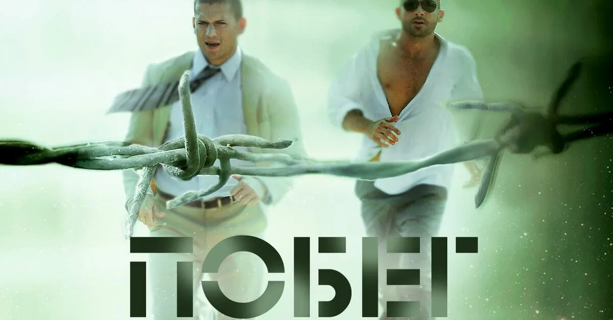
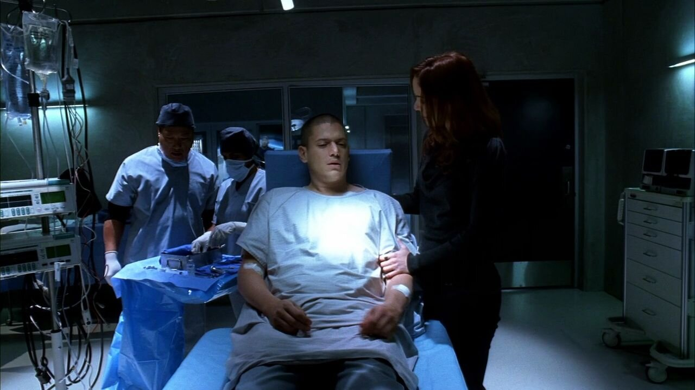
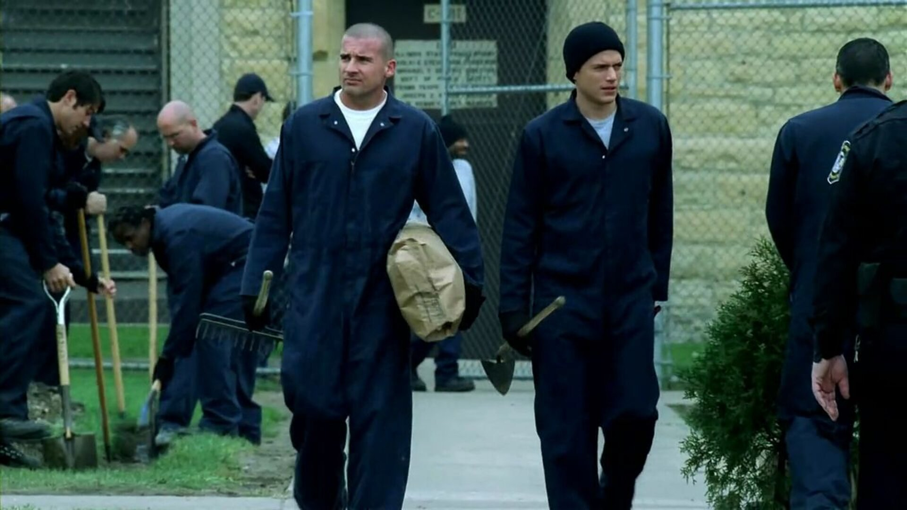
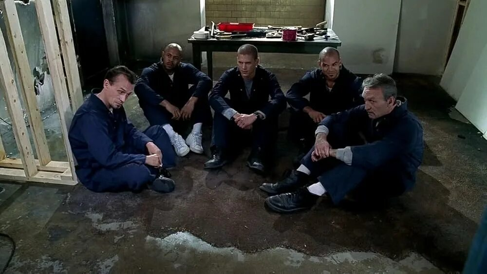

Побег
Режиссёр: Пол Шойринг
О проекте
Майкл совершает ограбление банка и отправляется в тюрьму, где отбывает срок Линкольн. Однажды именно Майкл спроектировал здание, которое ныне является тюрьмой, поэтому он, как никто, знает все его тайные входы и выходы.
Сериал исследует темы вины, памяти и того, как прошлое может разрушать настоящее. Атмосферная съёмка, сильные актёрские работы и неожиданные повороты.
Кадры из проекта



В главных ролях
- Вентворт Миллер
- Доминик Пёрселл
- Амори Ноласко
- Роберт Неппер
Отзывы (статические)
Очень атмосферно, держит в напряжении до последней серии. Рекомендую!
Сильный сценарий и отличная операторская работа. Один из лучших сериалов.
Не могла оторваться, плакала в финале. Браво!